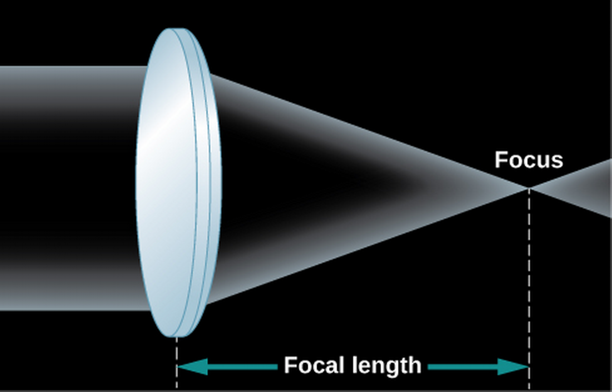

ASTR101 Ch 5-6
Ch 5 - Radiation and Spectra
The Behavior of Light
Basics
- Radiation in our context is light, which radiates outwards—though in other contexts it describes subatomic particles released in atomic processes.
- Our radiation (light, in this course) is also generated at the atomic level.
Maxwell's Theory of Electromagnetism
- Each atom is made up of protons (positive charge), neutrons (no charge), and electrons (negative charge).
- The neutrons and protons are in a tiny nucleus, while the electron is generally around it.
- Electricity and Magnetism - electric force is due to stationary charged particles interacting, while magnetic force is due to moving charged particles interacting (among other things).
- We can talk about the field that a charged distribution exerts as a generalization of its force on multiple objects; like the gravitational field, we call these the electric or magnetic fields; each can create the other.
- Oscillations of charged matter creates electromagnetic waves; light.
The Wave-Like Characteristics of Light
- Water and sound waves, light waves, and mediums.
- The aether.
- Speed of light.
- Wavelength λ is the horizontal length covered by one cycle, frequency f the number of cycles that pass per second (measured in 1/s, or Hertz; Hz). The wave speed is denoted \[v=f\lambda.\] For light in a vacuum, the velocity is given by \(v=c\).
Light as a Photon
- Light sometimes behaves like a particle would; we term the equivalent light "particle", a photon.
- This particle-wave duality is studied in Quantum Mechanics and Quantum Optics.
- The wave and photon models of light are simplifications of the quantum model which describes both.
Propagation of Light
- By how much does the area increase if we double the radius?
- As distance from the bright object increases by factor s, radiation concentration decreases by 1/s2; this is the inverse square law.

The Electromagnetic Spectrum


Types of Electromagnetic Radiation
- Gamma rays are high energy, short wavelength rays dangerous to living tissue. Generated deep inside stars and absorbed by atmosphere.
- X-rays are energetic and penetrate tissue but not bone (hence their use), blocked by atmosphere.
- Ultraviolet (UV) is higher energy than violet light; also called "black light"; mostly blocked by atmosphere, causes sunburn, cancer in overexposure.
- Visible light, ROY G BIV—mostly passes through atmosphere if not cloudy.
- Infrared radiation is absorbed by water and carbon dioxide, but somewhat penetrates atmosphere.
- Microwave, used in short-range communication and microwave ovens, are absorbed by water vapor.
- Radio waves include radar and AM (which reflects inside ionosphere).
- The visible universe is only one small portion of Astronomy, which includes radio astronomy, astronomy examining infrared, x-ray, etc.
Radiation and Temperature
- Astronomical objects can emit mostly one band of wavelengths, depending on temperature.
- Radiation source is atomic in nature. Particles vibrating rapidly (high temperature) emit higher energy waves in general.
Radiation Laws
- Blackbody: object that doesn't reflect or scatter any radiation (an idealization useful for theory); it absorbs radiation, gets hot, and its atoms release radiation from the heat.

- Note that radiation is emitted at all wavelengths, due to distribution of temperatures.
- Stefan-Boltzmann Law: A hotter object emits more total power than a cooler one. With \(\sigma=5.67\times10^{-8}\), the energy flux F–or power emitted per square meter—is given by \[F=\sigma{}T^4\]
- Wien's Law: The higher the temperature, the shorter the peak energy wavelength. \[\lambda_{max}=\frac{(3\times10^6 nm\cdot{}K)}{T}.\]
- These criteria give us a "star thermometer"—if we can measure the emitted light distribution, we can make inferences about the temperature of that star!
- Heating metal: no glowing (infrared) -> dull red -> orange-red -> yellow -> blue-white. (Unrelated to "hot" and "cool" colors in Art).
- The absolute luminosity L of a star is its total power emitted in all directions. It's obtained from the energy flux (power per unit area) by multiplying by the total surface area of a sphere; \[L=4\pi{}R^{2}F=4\pi{}R^{2}\sigma{}T^4.\]
Spectroscopy in Astronomy
Properties of Light
- Reflection is light "bouncing" off of a surface, like a mirror.
- Refraction is the bending of light by materials (eg, when light goes from one medium, or material, to another).
- Optics is the study of light; one optical instrument or tool is the telescope.
- Telescopes differ from binoculars and glasses because they use curved mirrors rather than curved lenses to magnify.
White light
- White light, passed through a prism, results in a rainbow, because the refraction of light depends on the material as well as the frequency of light, in a phenomenon known as dispersion (the rays disperse).
- This results in a spectrum; an instrument used to measure the spectrum is called a spectrometer.
- White light is actually the presence of all wavelengths of light!


The Value of Stellar Spectra
- The sun's light was put through a spectrometer in 1802 by William Wollaston; he noticed that some frequencies were not present (they were black where the color would appear).
- Researchers found the same is true of light that passes through a gas of some element.
- That means the gas is not transparent to some wavelengths—it lets most colors through, but not some specific set of colors. Combining two gases would subtract both their sets of colors from the resulting spectrum, each element having its specific spectrum.
- Heated gases also emitted light in a particular set of small bands, or portions of frequencies, and these matched! Each element has its signature spectrum!
- What do you think?

Types of Spectra
- A continuous spectrum, formed by a radiating dense gas or solid, is composed of all wavelengths of light. An absorption spectrum is a series of black lines in an otherwise continuous spectrum, which gives information about what wavelengths are absorbed by a material. The emission spectrum is the opposite, it's what wavelengths are emitted by the material when it's excited.
- We can apply spectral analysis to help determine the material in a sample, or in light from a distant galaxy.
The Structure of the Atom
- What's an atom made of?
- In their natural state, atoms are electrically neutral.
- Rutherford's Gold Foil Experiment hit gold with α particles—He2+—some bounced; "as if you fired a 15-inch shell at a piece of tissue paper and it came back and hit you."
- Conclusion: nearly all mass is contained in a tight nucleus, the electrons are in motion (or they would go towards the protons).

The Atomic Nucleus
- Mass of proton is 2000 times that of electron, their charges are equal and opposite.
- Electrons "orbit" about an average radius, different for each atom.
- Elements are defined by the number of protons (1 for hydrogen, 2 for helium, etc.).
- Isotopes of an element have different numbers of neutrons.

The Bohr Atom
- Niels Bohr solves the mystery of why electrons don't collapse into nucleus: quantized orbital radii. Energy is only radiated or absorbed when an electron changes energy levels, energies corresponding to a certain orbital radius. Strange, but lays foundations for Quantum Mechanics.
- If the correct amount of energy is supplied, the electron can jump to a higher energy level. The electron can also jump down to a lower energy level, releasing energy in the form of light.
- The energy that light carries is given by its frequency \(f\) in the relationship, \[E=hf,\] where \(h=6.626\times10^{-34}\) joule-seconds (J⋅s) is Planck's constant.
Formation of Spectral Lines
- Bohr's model can explain the spectral lines of different materials!
- Based on orbital radii of atoms (based on their nuclear configuration), each atom can accept and emit a unique spectrum of light.

Energy Levels and Excitation
- Ground state is the lowest radius that an electron can orbit the nucleus.
- Excitation is when an atom absorbs energy and goes to a higher energy level. After excitation, it may relax back to its original state, releasing light.
Energy Level Diagrams for Hydrogen


Ionization
- An atom is ionized, or turned into an ion, when enough energy is given to the electron to free it from the pull of the nucleus.
- This changes the energy levels.
The Doppler Effect
- redshift is a lengthening of the wavelength, and blueshift a shortening of it.
- The doppler shift is defined by the equation,
\[\frac{\Delta\lambda}{\lambda}=\frac{v}{c}\] where λ is the source wavelength, Δλ the difference between λ and what is measured by the observer, c the speed of light, v the relative speed of the observer and source in line of sight.
- So how are astronomers confident of the chemical make-up of stars?
Ch 6 - Astronomical Instruments
Telescopes
- Only about 9000 stars visible to human eye.
- A telescope is a "bucket" for catching more light than your pupils normally would.
- Size matters.
- Light from the telescope can be spectrally separated.
- Then the amount of light is detected by a detector, a sensor.
How Telescopes Work
- A telescope collects light from a source, and focuses it into a point or image.
- Collecting can be done with a lens or curved mirror.
- Telescope light-gathering power is compared with apertures; diameters of the telescope opening.
- How much more light can a telescope with twice the aperture collect?
- Can use an additional lens, the eyepiece, to magnify the image.
Lenses
- Lenses are typically curved glass that refract, or bend, light rays. This example converges light towards the focus of the lens, a focal length away from its center.

- Refracting telescopes use a lens to focus light, while reflecting telescopes use a mirror.

- Light travels through a lens in refracting telescopes; imperfections anywhere in the lens or in the cut cause distortions.
- Different frequencies travel differently in lenses (remember prisms?), leading to chromatic aberration in refracting telescopes.
- Glass sags!
- Reflecting telescopes avoid these problems with a concave primary mirror, for which only a single surface needs good manufacturing.

Telescopes Today
- Millions/billions of dollars to build.
- Motorized drives.
- Huge steel supports for heavy mirrors (around 15 tons!).
- Largest diameter 10.4 m.
- Correct mechanically for sag (among other things).
- Can use multiple mirrors together, like 36 hexagonal mirrors in Keck telescopes.
Picking the Best Observing Sites
- Gemini and Keck telescopes cost $100 million, so we want prime real estate.
- Mountains, far from light pollution is good.
- Other factors include clear weather, atmospheric water vapor, air turbulence (which leads to bad seeing). We want low turbulence, stable air (like air that's flowed over water a long distance).
- So we want high, dark, and dry.
The Resolution of a Telescope
- Resolution refers to precision of detail in an image.
- Resolution measured in arcseconds (how big a quarter would look, 5 km away!).
- Good resolution can come from high aperture.
- Resolution is weakened by gases of different temperature which act as lenses, distorting the image. This is why the stars "twinkle"!
- It's also why we have telescopes on satellites in space.
- Another option is adaptive optics, where we undistort atmospheric distortion with a flexible mirror.
Visible-Light Detectors and Instruments
- The human eye has short integration time; the time to accumulate light energy before sending a signal (to the brain). A fraction of a second. Also, the brain doesn't have a usb cable to save our data, so we use detectors.
- Before the detector, we typically use a spectrometer.
Photographic and Electronic Detectors
- Used to take photographs, now use charge-coupled devices (CCDs) like those in cellphone cameras, where light radiation is measured in a grid of pixels. This is 90 times more sensitive to light than the old photograph method.
Infrared Observations
- Infrared Zoo
- These are difficult because at an average surface temperature of 300 K, the Earth emits radiation at a peak wavelength of 10μm (Wien's Law).
- Detectors are shielded from nearby radiation and cooled near absolute zero (1-3 K) through immersion in liquid Helium.
Spectroscopy
- Gives information about chemical composition, temperature, motion, and more.
- Spread out light by color (using prism or more commonly, a grating) and put detectors in each color's path to measure just that color.

Radio Telescopes
- 1930s, Karl G. Jansky measures radio signals from an unknown source, strongest about 4 minutes earlier on each successive day. What does he conclude?
Detection of Radio Energy from Space
- Note: radio waves are not Ke$ha's latest hits, they categorize a band of waves 104-1012 Hz. We can't hear/see radio waves.
- Moving charged particles can create waves, so can waves move charged particles!
- How to create a radio wave-mirror? Radio waves are reflected by conducting surfaces. Radio telescopes resemble giant satellite dishes.
Radio Interferometry
- Longer wavelengths are harder to resolve; the largest radio telescope has lower resolution than an amateur telescope.
- Radio astronomers take advantage of interference in radio waves by linking two or more telescopes into an interferometer, or better yet, into an interferometer array, such as the National Radio Astronomy Observatory's Very Large Array (VLA) near Socorro, NM, consisting of 27 25-m aperture telescopes on railroads over 36 km.

- If we combine the interferometry data later, we can separate the telescopes further; as in the Very Long Baseline Array (VLBA);

Radar Astronomy
- Radar is bouncing radio waves off of objects in our solar system and analyzing the reflection. Timing gives us the distance to, say, a mountain on Jupiter's surface.
- Using the Doppler effect, radar observations can determine the speed of objects!
- Best facility was 305-m telescope in Arecibo, Puerto Rico, in a bowl shape with hills, wherein the detector is moved. Now surpassed by Five-hundred-meter Aperture Radio Telescope (FAST) in Pingtang Cty, China, which moves plates in the dish to focus on different objects.


Observations Outside Earth's Atmosphere
Airborne and Space Infrared Telescopes
- Water vapor is the main source of atmospheric interference, and it's concentrated in the lower part of Earth's atmosphere. Even 100 m elevation helps!
- Airplane observations have been made since 1960s, and are still being made.
Hubble Space Telescope (HST)
- Named for Edwin Hubble, who discovered the expansion of the universe in the 1920s (more on that later).
- Mirror so precise that if it were scaled to the size of the entire continental US, there would be no hill or valley larger than ~6 cm.
- Scientists saved money by not testing it before launch.

- Turns out the mirror's shape was off by the width of a human hair, enough to make things blurry.
- December 1993, astronauts captured the orbiting telescope and fixed it (even put a new camera on!).
- The HST has been upgraded and repaired multiple times since.
High-Energy Observatories
- Mirrors are harder for X- and γ- (gamma-)rays, which go through matter, but this is rectified in satellites (somehow).
- Gamma-ray detection can be done indirectly by observing byproducts of their collisions with charged particles on Earth.
The Future of Large Telescopes
- Large Synoptic Survey Telescope (LSST, 2021): Telescope with large field of view, scans sky for transients or events that happen quickly, such as exploding stars.
- Cherenkov Telescope Array (CTA, 2021-2025): Measures gamma rays from ground.
- Others working on larger-mirror telescopes (a third the size of a football field, composed of smaller mirrors).